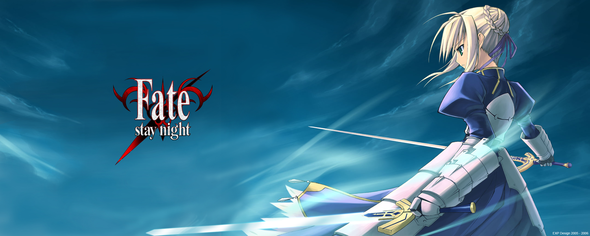
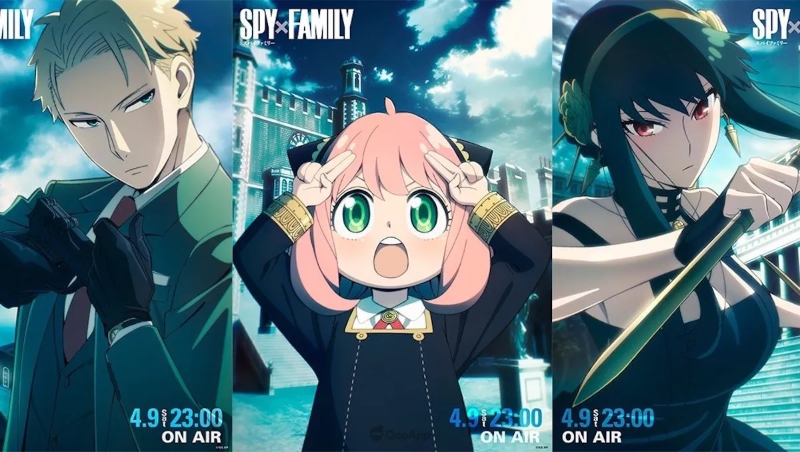

A história foca-se primariamente na heroína Rin Tohsaka. Após a morte de seu pai, Rin entra na Guerra do Santo Graal somente para honrar a herança da prestigiada Casa Tohsaka ao lado de seu servo, o Arqueiro. Brevemente, no entanto, ela descobre que Shirou Emiya, um menino de seus tempos de Ensino Fundamental, também se envolveu nas batalhas e então o salva, inesperadamente, em momento de injúria fatal. Sem delongas, Rin parte para pôr fim às conspirações que cercam a Guerra do Santo Graal ao lado de Shirou e seu servo, a Sabre.
Data de lançamento: 30 de janeiro de 2004
Autor: Kinoko Nasu
ASSISTA O TRAILER

Spy X Family é uma série japonesa de mangá shōnen escrita e ilustrada por Tatsuya Endo. A história segue a vida de Twilight, um espião que precisa "formar uma família" de forma repentina para executar uma missão.
Data de lançamento: 25 de março de 2019
Autora: Tatsuya Endo
ASSISTA O TRAILER